1.能被同一量量尽的那些量叫做可公度的量，而不能被同一量量尽的那些量叫作不可公度的量．
2.当一些线段上的正方形能被同一个面所量尽时，这些线段叫做正方可公度的．当一些线段上的正方形不能被同一面量尽时，这些线段叫做正方不可公度的．
3.由这些定义可以证明，与给定的线段分别存在无穷多个可公度的线段与无穷多个不可公度的线段，一些仅是长度不可公度，而另外一些也是正方不可公度．这时把给定的线段叫做有理线段，凡与此线段是长度，也是正方可公度或仅是正方可公度的线段，都叫做有理线段；而凡与此线段在长度和正方形都不可公度的线段叫做无理线段．
4.又设把给定一线段上的正方形叫做有理的，凡与此面可公度的叫做有理的；凡与此面不可公度的叫做无理的，并且构成这些无理面的线段叫做无理线段，也就是说，当这些面为正方形时即指其边，当这些面为其他直线形时，则指与其面相等的正方形的边．
命题1 给出两个不相等的量，若从较大的量中减去一个大于它的一半的量，再从所得的余量中减去大于这个余量一半的量，并且连续这样进行下去，则必得一个余量小于较小的量．
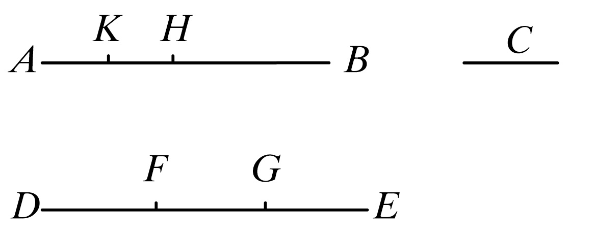
设AB，C是不相等的两个量，其中AB是较大的．
则可证若从AB减去一个大于它的一半的量，再从余量中减去大于这余量的一半的量，而且若连续地进行下去，则必得一个余量，它将比量C更小．
因为C的若干倍总可以大于AB. ［参看v.定义4］
设DE是C的若干倍，且DE大于AB；
将DE分成等于C的一部分DF，FG，GE，
从AB中减去大于它一半的BH，又从AH减去大于它的一半的HK，
并且使这一过程连续进行下去，一直到分AB的个数等于DE划分的个数．
然后，设被分得的AK，KH，HB的个数等于DF，FG，GE的个数．
现在，因为DE大于AB，又从DE减去小于它一半的EG，又从AB减去大于它一半的BH，所以余量GD大于余量HA.
又由于GD大于HA，且从DG减去了它的一半GF，又从HA减去大于它一半的HK，所以余量DF大于余量AK.
但是DF等于C，所以C也大于AK，于是AK小于C.
所以量AB的余量AK小于原来给定的较小量C.
证完
这个命题应该记住，因为它是欧几里得对xii.2证明所要求的引理，即两圆面积的比等于两圆直径上正方形之比．一些作者似乎有这样的印象，即xii.2和使用穷竭法的卷Ⅻ中其他命题是欧几里得使用x.1的唯一地方；人们普遍认为直到卷Ⅻ开始才使用x.1．甚至康托尔（Cantor）评论说欧几里得未根据它做出任何推论，甚至是我们最期望得出的结论：“即如果两个量不可公度，我们总可构造一个可公度的量，其中第一个与第二个量的差可任意小．”但至今在xii.2之前未使用过x.1，欧几里得事实上是在紧邻的下一个命题x.2中使用了它．因此，在下一个注解中将表明，因为x.2给出了两个量不可公度的准则（对研究不可公度量的一个必要的前提），那么x.1就应该在此出现．
欧几里得用x.1不仅证明xii.2而且也证明了xii.5（两个等高的以三角形为底的棱锥体之比等于它们两底面积之比），利用这个方法他证明了（xii.7和推论），即任意棱锥体的体积是与它等底等高的棱柱的三分之一，和xii.10（任何圆锥的体积是与它等底等高的圆柱体的三分之一）以及其他类似的定理．现在xii.7和xii.10定理按照阿基米德的说法应归功于欧多克索斯（Eudoxus）（见论球和圆柱的前言）．他在另外一本著作（求抛物线弓形的面积）的前言中说前者（即xii.7）和两圆面积的比等于它们直径上正方形之比，可用他所说的如下引理证明：“对不相等的线，不相等的面或主体，其大者超过小者的数量，即使不断增加的话，也是会超过与类似物相比的数量．”也就是与原数量种数相同的数量．阿基米德还说起他归功于欧多克索斯的第二个定理xii.10也是用一个类似上述引理而证明的．这样由阿基米德所提出的引理与x.1完全不同，但是阿基米德本人在xii.2（球和圆柱体．i.6）中用到多次x.1．正如我以前所提出的（见阿基米德文集），由于提到与Eucl.xii.2有关的两个引理而造成的明显困难可能参照对x.1的证明加以解释．欧几里得在这里用的是较小量，并且说通过对较小量的加倍，有时可使它超过较大的量．这一诊断显然是基于卷V中的定义4，其大意是“两个量是可比的，其中一个量如加倍，则会超过另一个．”因此，在x.1中的较小量将可看作是两个不等量的差，很明显，阿基米德所提出的引理事实上被用来证明x.1的引理，而x.1的引理在我们进行的求面积法和求容积法的研究中是非常重要的．
“阿基米德公理”除了在Eucl.x.1中应用以外，亚里士多德实际上也同样引用过x.1的结果．因此他说（见物理学viii.10266，b2）“通过连续加一个有限量，我将会超过任何确定的量，并且同样通过不断从中减去，我将会得到少于它的量，出处同上（iii.7，207 b10）”，“因为对一个量不断做二等分是不能穷尽的”．因此将他所应用的引理称作“阿基米德原理是有些误导，因为他没有声称自己是这个原理的发现者，而且这个公理很明显是在更早时候发现的．”
施托尔茨（Stolz）表明了如何通过戴德金（Dedekind）公设证明这个所谓的阿基米德公理或者说公设．假设两个量均为直线段，必须证明如给定两条直线段，其中较小的量的某个倍数肯定大于另一个量．
放置这两个直线段使它们有一共同端点，而且较短的线段在共同端点的同一侧沿着另一线段．
如果AC比AB长，我们必须证明存在一个整数n，而n·AB>AC．
假设，这不是正确的，但存在着某些点，如B不与端点A重合，并且n会是任意大的整数，n·AB<AC；而我们必须证明这个假设会导致荒谬．
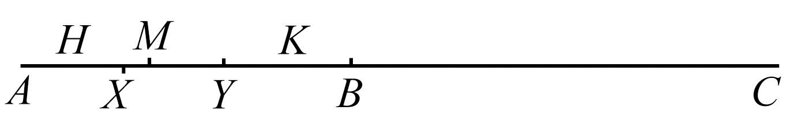
AC上的各点可认为是分成两“部分”，即
（1）H点，该点上不存在任何这样的整数n，即
n·AH>AC．
（2）K点，该点上确实存在这样的整数n，即n·AK>AC．
这种分类满足应用戴得金公设的条件，从而存在一个M点，而且AM上的点属于第一类，MC上的点属于第二类．
现在在MC上取一个Y点．而且MY<AM．AY的中点X将落在A点和M点之间，从而属于第一类；但是，由于存在一个整数n，而且n·AY>AC，则2n·AX>AC，而这是与假设相矛盾的．
命题2 如果从两不等量的大量中连续减去小量，直到余量小于小量，再从小量中连续减去余量直到小于余量，这样一直作下去，当所余的量总不能量尽它前面的量时，则原两个量是不可公度的．
为此，设有两个不等量AB，CD，且AB是较小者，从较大量中连续减去较小的量直到余量小于小量，再从小量中连续减去余量直到小于余量，这样一直进行下去，所余的量不能量尽它前面的量．
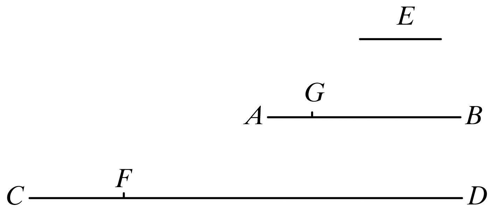
则可证两量AB，CD是不可公度的．
因为，如果它们是可公度的，则有某个量量尽它们．设量尽它们的量是E.
设AB量CD得FD，余下的CF小于AB.
又CF量AB得BG，余下的AG小于CF，并且这个过程连续地进行，直到余下某一量小于E.
假设这样做了以后，有余量AG小于E.
于是，由于E量尽AB，而AB量尽DF，
所以E也量尽FD.
但是它也量尽整个CD，所以它也量尽余量CF.
但CF量尽BG；
所以E也量尽BG.
但是它也量尽整个AB；所以它也量尽余量AG，
较大量量尽较小量：这是不可能的．
因此，没有任何一个量能量尽AB，CD，
所以量AB，CD是不可公度的．
［x.定义1］
证完
此命题表明对不可度量的判断方法，它建立在对寻求最大公度量的通常运算上．这两个量的不可公度性的标志是当连续的余量越来越小直到它们都小于任一指定的量时，这个运算将永远不会停止．
让我们看看欧几里得所说“让这一过程不断地重复，直到得到比E小的量．”这里他明显地假设，即这一过程将在某时产生一个比任一指定量E小的余量．而现在这绝不是不证自明的，而且海伯格（虽然他很小心提供参照）和洛伦兹没有指出这一假设的基础．它实际上就是x.1．因为比林斯利和威廉姆斯的眼光相当敏锐都看到了这一点．事实是如果我们从一个未能准确量度的较大量中一次或多次减去较小的量，直到余量小于较小的量，我们则从较大量中减去大于其一半的量．因而在图中FD大于CD的一半，BG大于AB的一半．如果我们继续这一过程，在CF上尽可能多次地减去AG直至消除一半以上；接着，大于AG一半的量被减，如此不断进行下去．这样沿着CD，AB交替进行，这一过程将减去一半以上，从而一半余量以上被减，再如此进行下去，在两个线段我们将得到一个小于任何给定长度的余量．
这个命题显示了求最大公度量的方法，下一个当然也与我们所用的方法相同，它可图示如下：
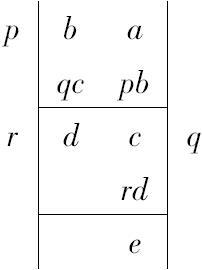
这一证明也与我们的相同，采用同样的形式，可见于命题vii.1，2的注释．在现在的情况下，假设是这一过程永不停止，并要求证明a，b在那种情况下不能有任何像f那样的公度量．假设f是一公度量并假设这一过程继续到余量e，比如说，小于f．
这样，因为f量尽a，b，它也量尽a-pb，或c．
因为f量尽b，c，它也量尽b-qc，或d；因为f量尽c，d，它也量尽c-rd，或e；而这是不可能的，因为e<f．
欧几里得把如果f量尽a，b，它也可量尽ma±nb的这个假定看作是不证自明的公理．
当然，实际上，通常没有必要为了观察该过程永不停止以及因此各量不可公度而长期进行这一过程．奥尔曼提出一个典型的例子（从泰利斯到欧几里得的希腊几何）．欧几里得在xiii.5中证明若AB在C点被分为中外比，并且，如DA等于AC，那么DB在A点被分为中外比．这事实上显然来自对ii.11的证明．反过来说，如线段BD在A点分为中外比，从较长的线段AB减去与较短的线段AD相等的AC，则同样地AB在C点被分为中外比．然后我们在AC上划出一段与CB相等，则同样地AC也将被区分，依此进行下去．现在线段上由此划分的较长的一段大于线段一半，而由xiii.3得知它小于较短段的两倍，也就是说从较长段划出较小段不会超过一次．从大量连续减去小量的过程就是寻求最大公度量．因此如这两个量是可公度的，那么这过程会停止．但这显然是不可能的；所以它们是不可公度的．
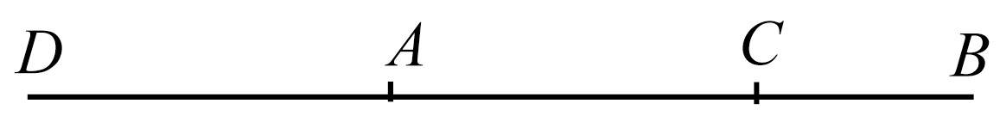
奥尔曼（Allman）认为这是有关线段的中外比（黄金）分割，而不是毕达哥拉斯所发现对角线和边是不可公度的．但是有证据表明，毫无疑义，确实是毕达哥拉斯发现了
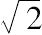
的不可公度性，并且对此倾注了大量精力．奥尔曼的观点并未使我感到很大兴趣，虽然毕达哥拉斯意识到中外比分割后的两部分是不可公度的．毕达哥拉斯根本不可能很多地研究这线段的不可公度性．因为据说泰特托斯（Theaetetus）曾对无理数进行第一次分类，而且很有可能把Eucl.xiii第一部分的内容都归因于他，在其中第6命题中有经过中外比分割后得到的有理直线段都是余线段的证明．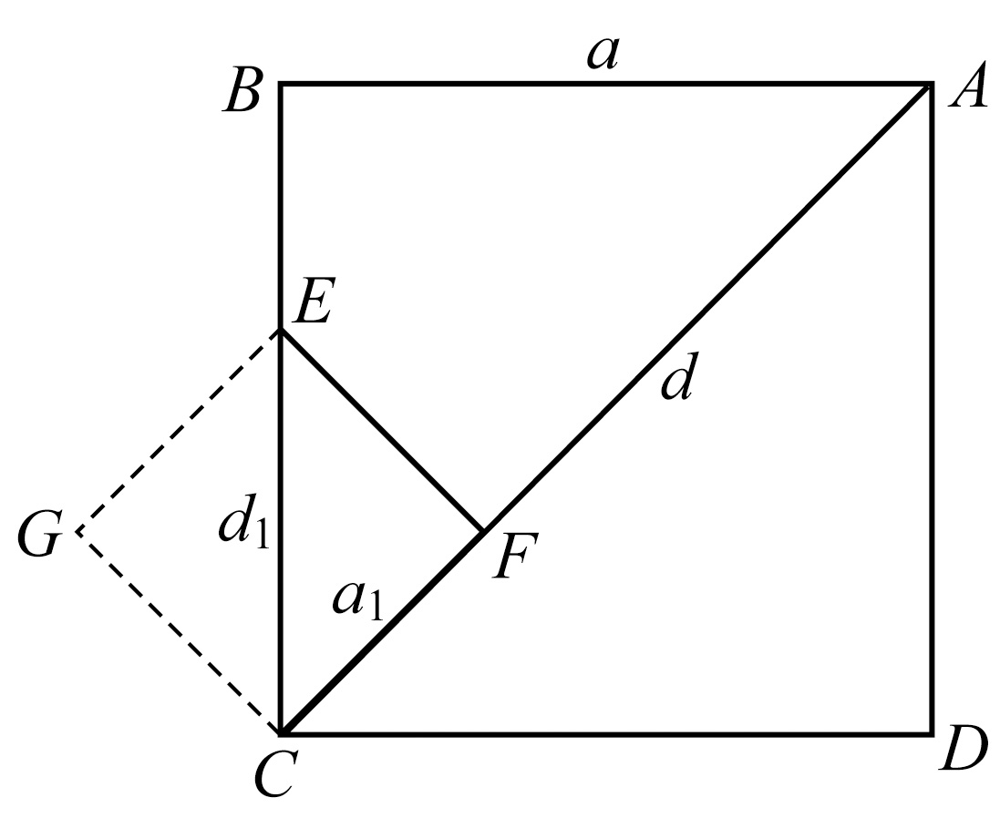
此外的不可公度性的证明方法实际上等同于x.2的方法，而且过程也不很复杂．Crystal的代数教科书中介绍了这一方法．令d，a分别是正方形ABCD的对角线和边．在AC线上划分出长度a的线段AF．以F为垂足，作AC垂线，与BC相交于点E．容易证明
BE=EF=FC
CF=AC-AB=d-a （1）
CE=CB-CF=a-（d-a）
=2a-d （2）
假设，如果可能的话，d，a可公度．如果d，a都能相应由任意有限单位表示，那么它们必定是一个某一确定单位的整数倍．
但从（1）可得出CF，以及从（2）可得出CE都是同一单位的整数倍．
CF和CE都是正方形CFEG的边和对角线．其边小于原正方形边的一半．如果a1，d1分别是此正方形的边长和对角线，
则：
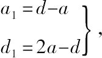
同样，我们可构成一个边长为a2而对角线为d2的正方形，a2和d2分别小于a1与d1的一半，而a2，d2必然是同一单位的整数倍．其中
a2=d1-a1，
d2=2a1-d1；
此过程可一直继续到（x.1）得到任意小的正方形，它的边和对角线仍是一个有限单位的整数倍．而这是不合理的．
所以a，d是不可公度的．
可以看出这个方法与毕达哥拉斯关于边和对角线系列以及正方形不断由小替大的方法正好相反，其中正方形逐个变小而不是逐个变大的．
命题3 已知两个可公度的量，求它们的最大公度量．
设两个已知的可公度的量是AB，CD，且AB是较小的；这样所要求的便是找出AB，CD的最大公度量．
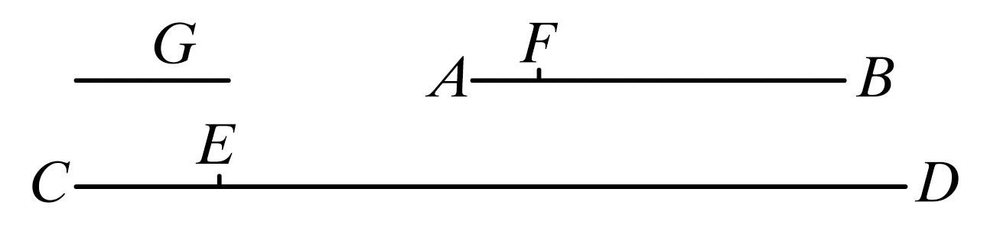
现在，量AB或者量尽CD或者量不尽CD.
于是，如果AB量尽CD，而AB也量尽它自己，
则AB是AB，CD的一个公度量．
又显然它也是最大的；
因为大于AB的量不能量尽AB.
其次，设AB量不尽CD.
这时，如果连续从大量中减去小量直到余量小于小量，再从小量中连续减去余量直到小于余量，这样一直作下去，则将有一余量量尽它前面的一个，因为AB，CD不是不可公度的． ［参看x.2］
设AB量CD得ED，余下的EC小于AB；
又设EC量AB得FB，余下的AF小于CE；并设AF量尽CE.
于是，由于AF量尽CE，而CE量尽FB，所以AF也量尽FB.
但是AF也量尽它自己；所以AF也将量尽整体AB.
然而AB量尽DE；所以AF也量尽ED.
但是它也量尽CE；所以它也量尽整体CD.
所以AF是AB，CD的一个公度量．
其次，可证它也是最大的．
因为，如果不是这样，将有量尽AB，CD的某个量大于AF，设它是G.
这时，因为G量尽AB，而AB量尽ED，所以G也量尽ED.
但是它也量尽整体CD；所以G也将量尽余量CE.
而CE量尽FB；所以G也量尽FB.
但是它也量尽整个AB，所以它也将量尽余量AF，
较大的量尽较小的：这是不可能的．
所以没有大于AF的量能量尽AB，CD；
从而AF是AB，CD的最大公度量．
于是我们求出了两个已知可公度的量AB，CD的最大公度量．
证完
推论 由此显然可得，如果一个量能量尽两个量，则它也量尽它们的最大公度量．
对于两个可公度量的这个命题（在细节上已做必要的修正）与vii.2对于数的命题正好相同，其过程可示如下：
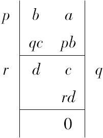
其中c等于rd，因此余项为零．
从而可证实d是a，b的公度量；由反证法可证明d是最大公度量，因为任何公度量可量尽d，而且大于d的量不可量尽d，反证法当然只是一种形式．
这一推论相当于vii.2的推论．
本书中给出寻求最大公度量的过程不仅是为了完整性，而且是因为在x.5中设定并使用了A、B两个量的公度量，所以即使还不知道公度量但指出可以寻求这种公度量也是必要的．
命题4 已知三个可公度的量，求它们的最大公度量．
设A，B，C是三个已知的可公度的量，求A，B，C的最大公度量．
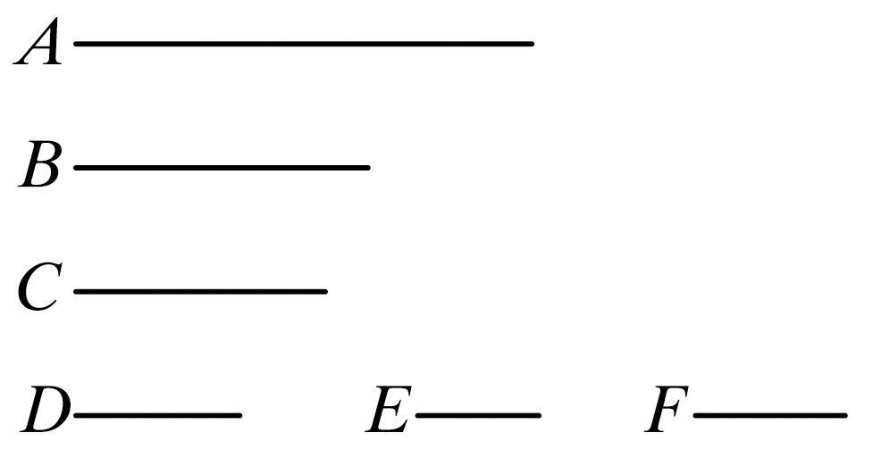
设两量A，B的最大公度量已得到，设它是D. ［x.3］
这时D或者量尽C或者量不尽C.
首先，设它能量尽C.
因为D量尽C；而它也量尽A，B；
所以，D是A，B，C的一个公度量．
显然，它也是最大公度量，因为任何大于D的量不能量尽A、B.
其次，设D量不尽C.
则首先可证，C，D是可公度的．
因为A，B，C是可公度的，必有某个量可量尽它们，当然它也量尽A，B；于是它也将量尽A，B的最大公度量D. ［x.3，推论］
但是它也量尽C；于是所述的量量尽C，D；
所以C，D是可公度的．
现在设C，D的最大公度量已得到，设它是E. ［x.3］
这时，由于E量尽D，而D量尽A，B，所以E也将量尽A，B，但是它也量尽C；所以E量尽A，B，C，所以E是A，B，C的一个公度量．
其次可证，E也是最大的．
因为，如果可能的话，将有一个大于E的量F，能量尽A，B，C.
这时，因为F量尽A，B，C，它也量尽A，B，
则F量尽A，B的最大公度量． ［x.3，推论］
而A，B的最大公度量是D，所以F量尽D.
但F也量尽C；所以F量尽C，D；因此F也量尽C，D的最大公度量E. ［x.3，推论］
这样以来，较大的量能量尽较小的量：这是不可能的．
于是没有一个大于E的量能量尽A，B，C；
所以，如果D量不尽C，则E便是A，B，C的最大公度量，若D量尽C，D就是最大公度量．
于是我们求出了已知的三个可公度量的最大公度量．
推论 显然，由此可得，如果一个量量尽三个量，则它也量尽它们的最大公度量．
类似地，我们能求出更多个可公度量的最大公度量．
又可证，任何多个量的公度量也能量尽它的最大公度量．
证完
本命题也对于vii.3中有关数的命题．因为欧几里得认为首先必须证明a，b，c相互间不是互素，a和c也不是互素，因此他认为有必要证明d，c是可公度的．因为a，b的任一公度量都会量尽它们最大的公度量d（x.3推论），所以这一点是必然无疑的．
在此证明中的论据，即d，c的最大的公度量是a，b，c的最大公度量与vii.3及x.3中的相同．
该推论中将此过程推广到四个或四个以上量的情况正对应了海伦把vii.3同样地扩展到四个或四个以上量的情况．
命题5 两个可公度量的比如同一个数与一个数的比．
设A，B是可公度的两个量．
则可证A与B的比如同一数与另一数的比．
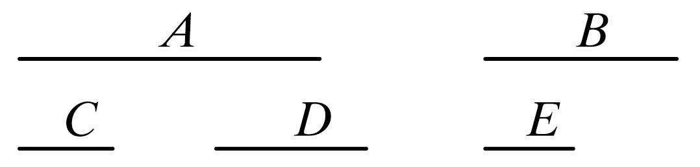
因为，由于A，B是可公度的，则有某个量可量尽它们，设此量是C.
而且C量尽A有多少次，就设在数D中有多少个单位以及C量尽B有多少次，就设在数E中有多少个单位．
因为按照D中若干单位，C量尽A，而按照D中若干单位，单位也量尽D，所以单位量尽数D的次数与C量尽A的次数相同；
所以C比A如同单位比D. ［vii.定义20］
因此，由反比，A比C如同D比单位． ［参看v.7，推论］
又因为按照E中若干单位，C量尽B，而按照E中若干单位，单位也量尽E.
所以单位量尽E的次数与C量尽B的次数相同；所以C比B如同单位比E.
但已经证明了A比C如同数D比单位；所以，取首末比，
A比B如同数D比数E. ［v.22］
于是两个可公度的量A比B如同数D比另一个数E.
证完
该命题论证如下：如果a，b是两个可公度的量，它们有一公度量c，并且
a=mc， b=nc，
其中m，n都是整数，
因此 c：a=1：m， （1）
取反比 a：c=m：1；
又有 c：b=1：n，
因此，取首末比（exaequali）a：b=m：n．
可以看出，在陈述（1）中欧几里得仅说明a对c的倍数与m对1的倍数相同．换句话说，他是根据在vii.定义20中对比例定义的叙述．但是此定义只适用于四个数的情况，并且c，a不是数，而是量，因此这一对比例的论述不合理，除非在v.定义5的意义指笼统的量，数1，m，就是量．同样，对本命题中的其他比例也如此．
因此，存在一疏漏．欧几里得应该已经证明了在vii定义20意义下成比例的量在v.定义5意义下也是成比例的，或者说数的比例也作为一特殊情况包含在量的比例中，西摩松在卷Ⅴ的命题C中对此作了证明．这里所要求的那一命题部分就是证明，即如果
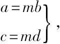
那么a：b=c：d，在v.定义5的意义下：
取a，c的任何等倍数pa，pc和b，d的任何等倍数qb，qd，
则
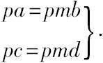
但根据pmb>=<qb，而有 pmd>=<qd．
因此根据pa>=<qb，而有 pa>=<qd．
而pa，pc是a，c的任意等倍量，且qb，qd是b，d的任意等倍量．
所以 a：b=c：d. ［v.定义5］
命题6 若两个量的比如同一个数比一个数，则这两个量将是可公度的．
为此，设两个量A比B如同数D比数E.
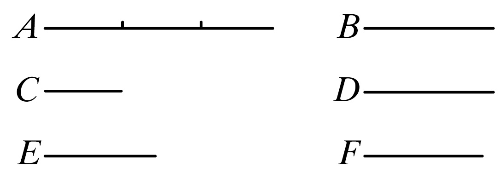
则可证量A，B是可公度的．
设在D中有若干单位就把A分为若干相等的部分，并设C等于其中的一个．
又设数E中有若干单位，取F为若干个等于C的量．
因为在D中有多少单位，
则在A中就有多少个等于C的量，
所以无论单位是D怎样的一部分，C也是A的一部分，
所以C比A如同单位比D. ［vii.定义20］
但是单位量尽数D；所以C也量尽A［1］．
又，由于C比A如同单位比D.
所以，由反比，A比C如同数D比单位． ［参看v.7推论］
又，由于E中有多少个单位，在F中就有多少个等于C的量，所以C比F如同单位比E. ［vii.定义20］
但是也已证明，A比C如同D比单位，所以取首末比，
A比F如同D比E. ［v.22］
但是，D比E如同A比B；所以有，A比B也如同A比F. ［v.11］
于是A与量B，F的每一个有相同的比，因此B等于F. ［v.9］
但是C量尽F，所以它也量尽B.
而且还有，它也量尽A，所以C量尽A，B.
因此A与B是可公度的．
推论 由这个命题显然可得出，如果有两数D，E和一个线段A，则可作出一线段F使得已知线段A比F如同数D比数E.
而且，如果取A，F的比例中项为B，则A比F如同A上正方形比B上正方形，即第一线段比第三线段将如同第一线段上的图形比第二线段上与之相似的图形． ［vi.19推论］
但是A比F如同数D比数E；
所以也就作出了数D与数E之比如同线段A上图形与线段B上图形之比．
证完
［1］但是此单位可量尽数D；因此C也可量尽A．这些词是多余的，然而在所有书稿（MSS）中都明显可见．
与上一命题相同，在此我们必须要引入量之比与数之比间的联系．以此作为前提，证明如下：
设 a：b=m：n，
其中m，n是（整）数．
将a分为m份，每份等于c，
因此 a=mc，
取d为 d=nc，
则 a：c=m：1，
并且 c：d=1：n，
由首末比 a：d=m：n
=a：b.（根据假设）
因此 b=d=nc，
从而c用n次量尽b，因此a，b是可公度的．
该推论常用在以后的命题中．
因此，（1）若a是一已知的直线段，且m，n是任意的两个数，则线段x可被找出，即
a：x=m：n．
（2）我们可找到一个线段y，即a2：y2=m：n，因为我们只可取y，即a，x的比例中项，如前所发现的，a，y，x或连比， ［v.定义9］
即 a2：y2=a：x
=m：n.
命题7 不可公度的两个量的比不同于一个数比另一个数．
设A，B是不可公度的量．
则可证A与B的比不同于一个数比另一个数．
因为，如果A比B如同一个数比另一个数，则A与B是可公度的． ［x.6］
但是并不是这样的，所以A比B不同于一个数比一个数．
证完
命题8 如果两个量的比不可能如同于一个数比另一个数，则这两个量不可公度．
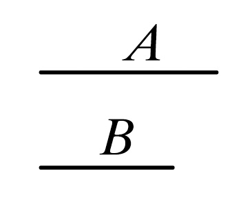
设两个量A与B之比不可能如同一个数比另一个数．
则可证两量A，B不可公度．
因为，如果它们是可公度的，则A比B如同一个数比另一个数． ［x.5］
但是并不是这样的．
所以量A，B是不可公度的．
证完
命题9 两个长度可公度的线段上正方形之比如同一个平方数比一个平方数；若两正方形的比如同一个平方数比另一个平方数，则两正方形的边长是长度可公度的．但是两长度不可公度的线段上正方形的比不同于一个平方数比另一个平方数；若两个正方形之比不同于一个平方数比另一个平方数，则它们的边也不是长度可公度的．
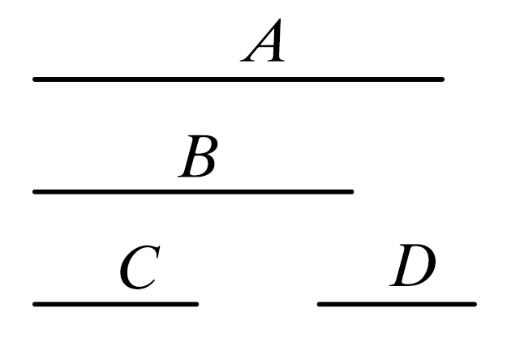
设A，B是长度可公度的两线段．
则可证A上正方形比B上正方形如同一个平方数比一个平方数．
因为，由于A与B是长度可公度的，所以A与B之比如同一个数比另一个数． ［x.5］
设这两个数之比是C比D.
于是A比B如同C比D，
而A上正方形与B上正方形的比如同A与B的二次比．
因为相似图形之比如同它们对应边的二次比； ［iv.20推论］
且C的平方与D的平方之比如同C与D的二次比．
因为在两个平方数之间有一个比例中项数，且平方数比平方数如同它们边与边的二次比． ［viii.11］
所以也有，A上正方形比B上正方形如同C的平方数与D的平方数之比．
其次，设A上正方形比B上正方形如同C的平方数比D的平方数．
则可证A与B是长度可公度的．
因为，由于A上正方形比B上正方形如同C的平方数比D的平方数，而A上正方形比B上正方形如同A与B的二次比，且C的平方数与D的平方数的比如同C与D的二次比，
所以也有，A比B如同C比D.
所以A与B之比如同数C比数D；因此A与B是长度可公度的． ［x.6］
再次，设A与B是长度不可公度的．
则可证A上正方形与B上正方形之比不同于一个平方数比一个平方数．
因为，如果A上正方形与B上正方形之比如同一个平方数比一个平方数，则A与B是可公度的．
但是并不是这样；
所以A上正方形与B上正方形之比不同于一个平方数比一个平方数．
最后，设A上正方形与B上正方形之比不同于一个平方数比一个平方数．
则可证A与B是长度不可公度的．
因为，如果A与B是可公度的，则A上正方形与B上正方形之比如同一个平方数比一个平方数．
但是并不是这样的；
所以A与B不是长度可公度的．
证完
推论 从上述证明中得知，长度可公度的两线段也总是正方可公度的，但是正方可公度的线段不一定是长度可公度的．
［引理 在算术中已证得两相似面数之比如同一个平方数比一个平方数， ［viii.26］
而且，如果两数之比如同一个平方数比另一个平方数，则它们是相似面数． ［viii.26的逆命题］
从这些命题显然可知，若数不是相似面数，即那些不与它们的边成比例的数，它们之比不同于一个平方数比一个平方数．
因为，如果它们有这样的比，它们就是相似面数：这与假设矛盾．
所以不是相似面数的数之比不同于一个平方数比一个平方数．］
对该命题的一个评注（Schol.X.No.62）明确地说，此处证明的定理是泰特托斯（Theaetetus）发现的．
如果a，b是线段
且 a：b=m：n，
这里m，n是整数，
则 a2：b2=m2：n2．
而且其逆亦真．
选自T.L.Heath：The Thirteen Books of Euclid’s Elements（Dover Publications.Inc.New York，1956）
（兰纪正 朱恩宽 冯汉桥 周畅 王晓斐 等译 张毓新 郝克琦 校 赵生久 绘图）